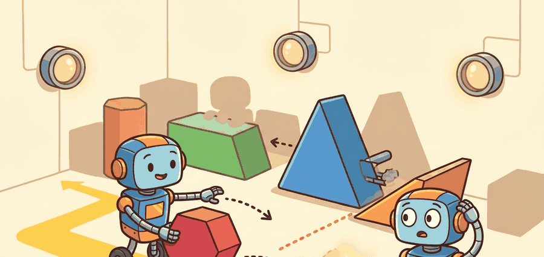

"The value function was accurate everywhere the data reached. Then the policy stepped one state beyond the edge."
A Q-Value With Regrets

This section assumes familiarity with value functions and Q-values from section 14.2 and with Bellman equations from section 2.6; the offline learning setting introduced in section 25.1 is a direct prerequisite. The pessimism mechanisms identified here are put into practice in section 25.3 (Conservative Q-Learning (CQL) and Implicit Q-Learning (IQL)) and section 25.4 (offline-to-online fine-tuning), and the same distribution-shift concept recurs in Part 11 alongside out-of-distribution detection in section 53.3.
A robot trained on thousands of warehouse pick-and-place demonstrations looks flawless on replay, then confidently reaches for a box placed two centimeters outside the training envelope and knocks it off the shelf. The Q-function assigned that novel action a high value because nothing in the data contradicted it. This is the core danger of offline reinforcement learning: a critic that extrapolates overconfidently beyond the behavior distribution hands the policy a map of a territory it has never visited. As robots are increasingly deployed from large shared datasets rather than live trial-and-error, understanding exactly where the data support ends, and enforcing pessimism there, is the skill that separates policies that generalize from policies that catastrophically fail. Here you will trace that failure mode mathematically, build intuition for why Bellman backups amplify it, and see why pessimism is the only principled fix.
Why Offline RL Is Different
For Distribution shift and extrapolation error, offline RL starts from a static dataset and must make the behavior policy, support envelope, reward labels, and candidate-policy update explicit before any robot rollout is trusted.
The behavior policy is whatever controller actually collected the dataset: a human teleoperator, a scripted motion planner, or a prior RL agent. In embodied AI this choice is not abstract. A physical robot cannot recover from a bad grasp mid-episode the way a simulated agent can reset; the behavior policy's kinematic habits define the boundary of states the robot has survived, and any learned policy that ventures beyond that boundary enters territory with no demonstrated recovery path. A narrow behavior policy (one operator, one object pose) leaves large gaps in joint-space that the critic fills with guesses.
What happens when the robot encounters a wrist angle no human operator ever used during data collection? The critic has no evidence of failure there, so it fills the gap with optimism, and the policy follows.
How the support gap becomes an overestimate
The behavior policy defines the support set through the density of its logged state-action visits. During Bellman backup, the critic trains only on transitions the dataset contains. For state-action pairs with zero logged visits, the neural network interpolates from nearby samples and extrapolates a value that no real reward signal has ever tested. Neural networks stay overconfident in low-density regions, so those extrapolated values run high. Gradient ascent on the policy objective then steers the robot toward those inflated, unsupported actions. Figure 25.2A shows this split directly: actions near the behavior distribution carry accurate Q-estimates, while out-of-distribution actions receive overestimated values that mislead the policy update.
Distribution shift appears at two levels. State shift means deployment observations differ from logged observations, for example a warehouse robot facing a bin lighting condition or clutter arrangement it never saw during data collection. Action shift means the learned policy chooses actions the behavior policy rarely tried, for example a wrist angle no operator used. Extrapolation error is the critic's confident lie beyond the data edge. In illustrative offline RL evaluations (as of 2023-2024), policies trained without support constraints typically reach Q-values an order of magnitude above the true return for out-of-distribution actions; the exact magnitude varies by task and dataset, but the direction of the bias, toward overestimation, is consistent because nothing in training penalizes an unvisited action. Those overestimates are typically large enough to drive the robot directly into the failure region. A policy that trusts its own critic past the edge of the data is not acting from knowledge; it is acting from silence mistaken for permission.
Checkpoint
So far: the behavior policy fixes what the robot has actually tried, the critic extrapolates optimistically into the gaps that policy left, and this extrapolation splits into state shift (new observations) and action shift (new actions), both of which the next sections attack directly.
For Distribution shift and extrapolation error, the policy is allowed to improve only inside measured dataset support; outside that support, the value estimate should be treated as a risk signal.
Formal Contract
An unconstrained critic lies beyond the data edge, and the objective below makes that boundary precise: it turns "stay inside support" from a slogan into a quantity training can optimize.
For Distribution shift and extrapolation error, the baseline objective is useful only after the data distribution and robot action scale are fixed; otherwise expected return can reward unsupported commands.
$$J(\pi) = \mathbb{E}_{\tau \sim \pi}\left[\sum_{t=0}^{T} \gamma^t r(s_t,a_t)\right].$$
For Distribution shift and extrapolation error, the practical objective needs a pessimism or support term because training cannot ask the real robot whether a novel action is safe.
$$\epsilon_{\mathrm{extra}}(s,a) = \left|Q_\theta(s,a) - Q^{\pi}(s,a)\right|, \quad a \notin \mathrm{supp}(\beta(\cdot\mid s)).$$
For Distribution shift and extrapolation error, the pessimism term should expose unsupported gripper poses, contact modes, saturation regions, missing viewpoints, or reset states rather than hiding them in one value estimate. Figure 25.2.B traces the full pipeline that enforces this, from logged data through the behavior-support and pessimistic-critic stages to a same-panel evaluation, separating what the critic may believe from what the reported score means.
Worked Numeric Trace
The pessimism term in that objective stays abstract until we attach numbers to it, so the following trace measures support for concrete candidate actions and shows exactly which one the critic would be guessing about.
Code Fragment 1 for Distribution shift and extrapolation error compares candidate actions with dataset support and applies pessimism only after the support metric and robot action scale are explicit.
# Measure a simple action-support distance for candidate actions.
# Large distances identify actions where a learned critic is extrapolating.
import numpy as np
behavior_actions = np.array([-0.4, -0.2, 0.0, 0.2, 0.4])
policy_actions = np.array([-0.35, 0.15, 0.9])
distances = [np.min(np.abs(behavior_actions - action)) for action in policy_actions]
for action, distance in zip(policy_actions, distances):
label = "inside support" if distance <= 0.1 else "extrapolation risk"
print(f"candidate={action:+.2f} nearest_logged_distance={distance:.2f} {label}")candidate=+0.15 nearest_logged_distance=0.05 inside support
candidate=+0.90 nearest_logged_distance=0.50 extrapolation risk
Step-Through: how a Bellman backup amplifies one overestimate
Trace one update with concrete numbers. Suppose the true return for an out-of-distribution action is \(Q^\pi(s,a) = 2.0\), but the critic, having no nearby data, outputs \(Q_\theta(s,a) = 8.0\) (an overestimate of \(+6.0\), an order-of-magnitude effect on the advantage, the gap between an action's Q-value and the state's baseline value that policy updates actually use to decide which actions to reinforce). Set \(\gamma = 0.9\) and an immediate reward \(r = 1.0\). The Bellman target for the previous state \(s'\) uses the max over actions: \(\text{target} = r + \gamma \max_a Q_\theta(s,a) = 1.0 + 0.9 \times 8.0 = 8.2\). Had the critic been honest, the target would have been \(1.0 + 0.9 \times 2.0 = 2.8\). The inflated target of \(8.2\) is now regressed into \(Q_\theta(s')\), so the \(+6.0\) error at \((s,a)\) has propagated backward as a \(0.9 \times 6.0 = +5.4\) error at \(s'\). On the next sweep that \(+5.4\) feeds the target for \(s''\) as \(0.9 \times 5.4 = +4.86\), and so on. Because the backup always takes the max, it preferentially selects exactly the overestimated actions, so the error does not average out: it compounds along the trajectory. Two backups in, an isolated optimistic guess has contaminated three states, and the policy now climbs toward the very action with no data support.
When using d3rlpy, set the scaler parameter to "min_max" and explicitly pass action_scaler="min_max" during fit(); if action scaling is left at its default None, the nearest-neighbor support distances computed by your own diagnostic code will be in a different unit than the internal critic, making the 0.1-threshold heuristic from this section silently invalid. Run algo.get_action_type() after fitting to confirm the action space is bounded. For contact-rich tasks such as peg insertion, tighten the extrapolation threshold to 0.05 rather than 0.1, because a 0.1-unit wrist deviation at insertion depth is enough to miss the hole entirely.
The critic is like a food reviewer who has only ever eaten at three restaurants: perfectly confident in those neighborhoods, wildly enthusiastic about anywhere else. An action 0.50 radians from anything the robot ever tried gets a glowing review, because the critic has no idea what happens there and optimism is free.
- Fit a behavior model or nearest-neighbor support estimator on logged state-action pairs.
- Train a critic on Bellman targets from the fixed dataset.
- For each candidate action, subtract a penalty when the action is unlikely under the dataset.
- Update the policy toward high pessimistic value, not raw critic value.
- Evaluate behavior cloning, offline RL, and any fine-tuned policy on one saved task panel.
More data collection and larger critic networks do not fix extrapolation error on their own: a bigger network still has no reward signal for an action nobody logged, and more demonstrations from the same operator still leave the same joint-space gaps. Pessimism is the only principled fix because it is the only mechanism that acts directly on the gap itself, penalizing or discarding value estimates precisely where the dataset offers no evidence, rather than hoping the gap will shrink on its own.
Extrapolation error is most damaging in three specific situations: (1) datasets collected by a single operator with a consistent style, where the coverage envelope is narrow and any perturbation at deployment pushes the policy out of support immediately; (2) contact-rich tasks such as peg insertion or door opening, where a 5-degree wrist angle outside the logged range produces a contact mode the critic has never scored; and (3) datasets with short episodes that do not include recovery trajectories, so the critic assigns high value to states it has only seen at the start of successful runs, never after a failure. In all three cases the symptom is the same: the policy performs well on the first few steps of evaluation and then diverges. Recognizing the situation early, before running offline RL at all, is why the support audit in step 3 of the recipe below is not optional.
Practical Recipe
Recognizing where extrapolation error strikes hardest is only useful if it changes what you do before training, so the steps below turn that awareness into an ordered workflow.
- Start with behavior cloning (BC) and report it. If BC solves the task, offline RL must justify its extra complexity.
- Write the dataset manifest: robot body, sensors, action units, operator source, split rule, reset distribution, episode horizon, reward source, and license.
- Audit action support before training. Plot nearest-neighbor distances or behavior log probabilities for every proposed policy action.
- Train CQL, IQL, or behavior-regularized actor-critic only after the support audit exists.
- Report same-config evaluation: one task panel, one split, one seed policy, one artifact, and one failure taxonomy.
For Distribution shift and extrapolation error, use d3rlpy, robomimic, or LeRobot after the support audit is defined; the library may replace replay-buffer plumbing but must preserve dataset split, action scale, and evaluation artifact.
For Distribution shift and extrapolation error, a warehouse manipulation audit should align expert picks, recoveries, failures, behavior-cloning baseline, support distance, and offline-RL policy output in one table before reporting improvement.
For Distribution shift and extrapolation error, compare behavior cloning and offline RL under the same split: BC is strongest with narrow expert demonstrations, while offline RL needs meaningful rewards, recoveries, and a visible support audit.
Extrapolation error most often surfaces not at the start of a rollout but after several successful steps. The policy reaches a state that is slightly off the trajectory distribution, selects an action that is 0.3 to 0.5 units outside logged support, and the critic returns an inflated Q-value because it has never seen evidence of failure there. The policy then doubles down, moving further out of distribution, and the rollout collapses. Teams frequently misattribute this to reward shaping or network capacity when the root cause is that no support guard was applied during policy extraction. Plotting per-step nearest-neighbor support distance over rollout time will reveal the exact step where the policy crossed the support boundary.
Practitioners equate dataset size with coverage and assume more demonstrations make offline RL safer. They do not. A large dataset from a single operator with a consistent kinematic style leaves most of the joint-space and contact-mode space unvisited, and the critic assigns overconfident high values across that entire gap. Coverage, not volume, is what matters. Each near-duplicate adds essentially zero new support, while each edge-case trajectory plugs a gap the critic would otherwise fill with optimism, so 300 trajectories that deliberately span edge cases, recovery behaviors, and varied object poses can outperform 10,000 that repeat the same successful motion. Before scaling data collection, audit the support envelope.
Think of a city map drawn only from one commuter's daily route. After years of travel that single path is recorded in extraordinary detail, but every street one block off the commute is still blank. Handing a stranger that map and telling them the city is "well documented" is misleading: volume of ink on the familiar corridor does nothing to fill the surrounding white space. A critic trained on repetitive demonstrations has the same problem; it knows one corridor with great confidence and has nothing to say about anywhere else, no matter how many times that corridor was traversed.
Real-World Application: warehouse manipulation with QT-Opt
Google's QT-Opt grasping system trained a Q-function on roughly 580,000 logged grasp attempts collected across a fleet of real arms, and the team observed that the critic confidently overvalued grasp poses outside the logged distribution, exactly the extrapolation error described here. The fix that made deployment reliable was constraining policy actions toward the behavior support and adding a small amount of fresh on-robot data to widen coverage where the critic was guessing. This is why later large-scale efforts such as the DROID dataset deliberately span 52 collection sites: coverage, not raw count, is what shrinks the extrapolation gap.
Three active directions define where the field is moving in 2024-2026. First, foundation-model-guided support estimation: rather than measuring action support with nearest-neighbor distances in raw joint space, labs including Berkeley's RAIL group (CalQL, 2024) and Google DeepMind (RT-2-X follow-up work, 2024) embed both logged and candidate actions into a shared vision-language feature space, then use cosine distance in that space as the support metric. This sidesteps the dimensionality problem for high-DOF arms, because semantic proximity in embedding space correlates much better with behavioral similarity than Euclidean joint-space distance does. Second, dataset curation as a first-class offline RL problem: the DROID dataset paper (Khazatsky et al., 2024, spanning 76,000 trajectories from 52 sites) showed that heterogeneous multi-site collection dramatically widens the support envelope, but also introduces inconsistent reward labeling across operators and sites. Active research at Stanford and CMU focuses on automated reward relabeling and trajectory filtering to make such datasets safe for offline RL without manual per-trajectory review. Third, world-model pessimism: systems such as TD-MPC2 (Hansen et al., 2024) train a latent dynamics model alongside the critic and penalize actions whose predicted next latent state has high model uncertainty, replacing hand-tuned support-distance thresholds with an uncertainty signal that adapts to local data density automatically. An open problem well-suited to a PhD dissertation: how should a support estimator handle the case where two demonstrations are close in embedding space but traverse entirely different contact modes (for example, a pinch grasp and a hook grasp that share a similar wrist pose)? Current distance-based and model-based methods treat them as equivalently supported, yet the contact-mode difference means extrapolation risk is high. A dataset that deliberately pairs kinematically similar but contact-different trajectories, combined with a contact-mode classifier as a second support axis, could be a tractable and publishable contribution.
For Distribution shift and extrapolation error, trust requires naming the behavior policy, support estimator, pessimism mechanism, BC baseline, and exact evaluation artifact.
Distribution shift and extrapolation error is useful when it makes the perception-action loop more reliable, not when it merely adds a more impressive model name.
Design a method-matched experiment for Distribution shift and extrapolation error. Specify the environment, observation schema, action interface, metric, and one perturbation that targets the section's core assumption.
Project Ideas
Beginner (weekend): Support distance visualizer in Gymnasium. Train a simple behavior-cloning policy on the HalfCheetah-v4 dataset from D4RL using d3rlpy, then write a diagnostic script that plots per-step nearest-neighbor support distance over 10 rollouts. The key challenge is setting up consistent action scaling so your distance metric and the library's internal critic share the same unit.
Intermediate (1-2 weeks): Pessimistic offline RL with PyBullet manipulation. Use the robomimic Lift dataset and compare CQL against a vanilla DDPG critic in PyBullet; log Q-value estimates for in-distribution and out-of-distribution actions side by side and produce a single evaluation artifact showing the overestimation gap. The key challenge is reproducing the same evaluation panel for both algorithms without changing the task split or reset distribution between runs.
Intermediate (1-2 weeks): Cross-embodiment support audit with LeRobot. Load two episode sets from the LeRobot dataset hub (same task, different robot embodiments), compute a joint-space support envelope for each, and measure the overlap; then report which action dimensions have near-zero overlap and would cause immediate extrapolation error if a policy trained on one embodiment is applied to the other. The key challenge is aligning action-space dimensionality across embodiments so that the overlap metric is construct-matched and not trivially zero due to differing joint counts.
Lab: watch a Q-function lie beyond the data edge
Goal: measure the extrapolation gap empirically by comparing critic Q-values for in-distribution versus out-of-distribution actions on a standard offline dataset.
Tools needed: Python, d3rlpy, and a D4RL MuJoCo dataset (for example hopper-medium-v0), all installable with pip install d3rlpy. Budget 15 to 30 minutes.
Steps: Load the dataset and train a CQL agent and a vanilla TD3+BC or DDPG critic (TD3+BC and DDPG are actor-critic algorithms that learn a Q-value critic without any conservative penalty, so they serve here as the unconstrained baseline against which CQL's pessimism is compared) for a few thousand steps each (short is fine; the gap appears early). For a batch of dataset states, query each trained critic on (a) the logged dataset action and (b) a deliberately out-of-distribution action made by adding noise of magnitude 0.5 to 1.0 to the logged action, then clipping to the action bounds.
What to vary: the noise magnitude (0.1, 0.3, 0.5, 1.0) and the algorithm (conservative CQL versus the unconstrained critic).
What to observe: the unconstrained critic's Q-value should stay high or even rise as the noise grows, revealing the optimistic extrapolation, while CQL's value should fall sharply for the noised actions. Plot mean Q-value against noise magnitude for both algorithms on one axis; the diverging curves are the extrapolation error you read about, made visible.
What's Next
This section grounded distribution shift and extrapolation error in an explicit robot-data contract: observations, actions, demonstrations, evaluation splits, and failure labels. The next reading step is Section 25.3, where the same contract is carried into the next technique or chapter.
IQL avoids direct evaluation of unseen actions and extracts policies through advantage-weighted behavioral cloning, a policy-extraction step that reweights logged demonstrations by their estimated advantage so that higher-advantage actions are cloned more strongly instead of querying the critic on unseen actions. It is a practical complement to CQL when teaching conservative improvement from static data.
CQL addresses overestimation from distribution shift by learning conservative value estimates. It is essential for understanding why offline RL must avoid unsupported actions.
D4RL: Datasets for Deep Data-Driven Reinforcement Learning.
D4RL popularized standardized offline RL datasets and benchmark tasks. Readers should use it as a cautionary baseline source, since robot deployment needs extra support checks beyond benchmark scores.
d3rlpy: Offline Deep Reinforcement Learning Library.
d3rlpy implements many offline RL algorithms behind a consistent Python API. It is useful for library-shortcut experiments after the reader understands support mismatch and conservative objectives.
robomimic Study: What Matters in Learning from Offline Human Demonstrations for Robot Manipulation.
The robomimic study compares offline learning algorithms across simulated and real manipulation tasks. It connects the chapter's offline RL theory to robot-specific data quality and evaluation concerns.